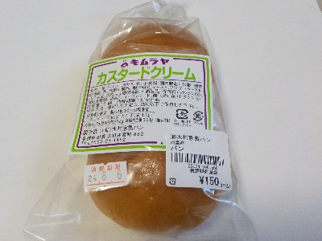
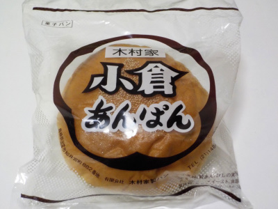
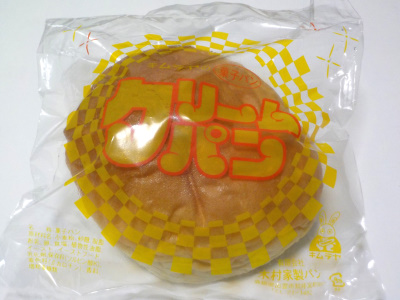
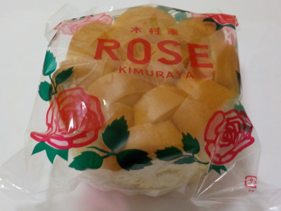
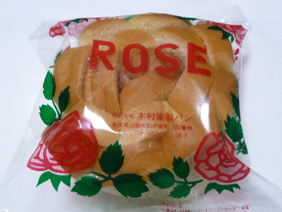
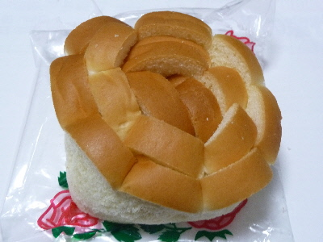
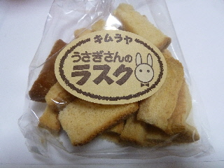
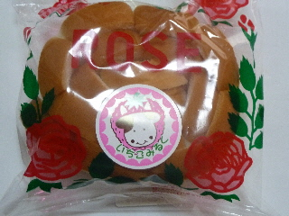
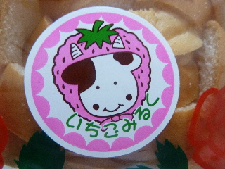
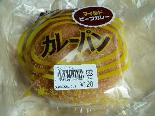

木村家製パンのカスタードクリーム。
2024/08/03

2個入り150円でした。クリームパンじゃなくて、カスタードクリームです。
黄色くてフンワリしたクリームが美味しかったです。
このカスタードクリームみたいな感じのカスタードプリンが食べたいと思いました。
島根県出雲市知井宮町882
2024/08/03

2個入り150円でした。クリームパンじゃなくて、カスタードクリームです。
黄色くてフンワリしたクリームが美味しかったです。
このカスタードクリームみたいな感じのカスタードプリンが食べたいと思いました。
2022/12/27


アンパンやクリームパンとかって、具材の上に空洞があるものが多いと思うんですが、このパンには空洞がありません。
きっしりパンがつまっているので、なんか得した気分になりました。
パンが多いと全体的に味が薄くなる感じがしますが、このパンはそんなことなくて、バランス良く美味しかったです。
2019/02/20
今日は体調が悪いので、ゆめタウンで何か簡単なものを買って食べようと思い色々見てまわりました。
でも食欲ないので基本的に欲しいものないなー。

色々迷ったんですが、木村家のバラパンにしました。
帰って美味しくいただきました。
2016/08/24
ゆめタウン出雲のパンコーナーの隅っこでいいものを見つけました。

薔薇パンです。

クリームの砂糖がジャリジャリしてていい食感です。
砂糖の素直な甘さが美味しかったです。
ゆめタウンはパンの種類が多いので、迷ったら次からこの薔薇パンを買おうかな。
2014/05/08
食パンの耳のラスクです。

近頃は色んなタイプのラスクが販売していますよね。
これはとってもシンプル。
パンの耳ってこんなに美味しいんだー。
確かに色々と凝ったラスクもいいですけど、そうゆうのでも耳の部分が美味しいかも？なんて思いながら食べました。
2013/10/26
パッケージにあった商品名が「出雲名物 バラパン いちごみるく味」です。
長いですね。

パンを外側からちぎって食べました。
クリームが手に付かないように気を付けながら食べるので、一つ食べるのに時間がかかりました。
長く味が楽しめていいですね。

苺と牛の組み合わせがなんとも不思議な絵ですね。
ちょっと気になりました。
2012/06/28
美味しいのでインド人もびっくりって書いてあるカレーパンです。
ユニークですね。

確かに、スパイシーなカレーが美味しかったです。
香辛料の風味がいいですね。
家庭のカレーとは一味違いました。